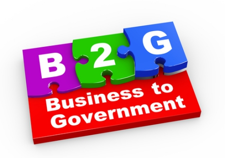

PRINCIPAL
B2B
B2C
B2E
C2C
C2G
ECOMMERCE DE PRODUCTOS DIGITALES
ECOMMERCE DE INFOPRODUCTOS
ECOMMERCE DE SERVICIOS
ECOMMERCE SOFTWARE AS A SERVICE (SAAS)
ECOMMERCE OPEN SOURCE
B2G
BUSINESS TO GOVERNMENT(B2G)
B2G es la abreviatura de Business to Government
y consiste en optimizar los procesos de negociación
entre empresas y el gobierno a través del uso de
Internet, a partir de transacciones electrónicas
para realizar contratación o compras; y realizar
las licitaciones de compras del gobierno a través de
medios electrónicos. Este tipo de comercio electrónico
también facilita la comunicación entre las empresas y
el gobierno en aspectos como los impuestos, registros
comerciales, licencias, información legal, programas,
políticas, procesos para negociación y productos, entre otros.
Este modelo resulta bastante atractivo para ambas partes,
pero principalmente para los proveedores, debido a que la
comunicación en línea representa una mayor velocidad en los
pedidos, lo que se traduce como una mayor eficacia;
esto sin contar con que este tipo de relaciones generalmente
están comprendidas dentro de un largo periodo de tiempo y en
grandes volúmenes de pedidos representando una fuente
segura de ingresos, razón por la cual las empresas recurren
a diferentes estrategias de marketing para captar la atención
de las administraciones públicas.
